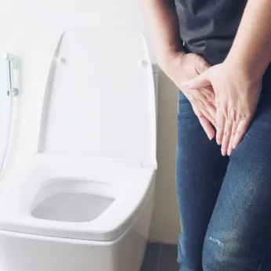

Incontinência Urinária
Incontinência Urinária
A incontinência urinária é uma condição que afeta muito mais mulheres e homens do que imaginamos, ocorre quando há perda involuntária de urina, podendo ser ao realizar um esforço por exemplo, correr ou tossir; ou nas atividades diárias.
Normalmente, acomete mulheres que tiveram parto vaginal, estão acima do peso ou no período da menopausa. No caso dos homens, aparece principalmente pós prostatectomia radical, aumento ou ressecção da próstata, ou contrações involuntárias da bexiga.
Se apresenta como sintoma, sinal, achado clínico ou urodinâmico; ela é um sinal de que algo está acontecendo de errado e o sintoma é a queixa.

O constrangimento decorrente desse distúrbio é um fator preponderante na identificação, avaliação e tratamento. Além disso, devido a adaptabilidade da mulher, que por usar absorvente desde sua adolescência com a chegada da menstruação, se acostumou com esses incômodos e, muitas vezes, não percebe que algo não está normal, segue suas atividades sem perceber os escapes. Muitas vezes há o desconhecimento de que aquela queixa possa ser devidamente tratada e a normalidade recuperada.
Observamos que os homens em sua grande maioria sofrem em silêncio com esse problema. Muitos adotam comportamentos específicos, tais como se vestir sempre de preto para em caso de ocorrer alguma perda, não ser identificada pelos demais. Evitam o contato social, pois estão sempre receosos de sua condição e necessitam estar próximos ao banheiro a fim de evitar escapes. Alguns apresentam problemas com a sexualidade, pois o constrangimento leva a diminuição da libido.
Uma grande parcela dos pacientes com incontinência urinária tem sua vida social e sexual bastante afetada, fazendo com que a intervenção não seja apenas na esfera médica. Há problemas emocionais, sociais, psicológicos e de bem-estar que devem ser analisados criteriosamente, a fim de que o mesmo tenha sua autoestima resgatada e a retomada da vida social.
As causas da incontinência são variadas, seguem abaixo as mais comuns:
– fraqueza dos músculos do assoalho pélvico (MAP);
– efeitos colaterais de medicamentos;
– menopausa;
– obstrução da uretra ou deformação da bexiga por aumento da próstata;
– constipação intestinal;
– infecções urinárias ou vaginais;
– cirurgias ginecológicas;
– cirurgias da próstata;
– doenças que afetam nervos ou músculos.
Tipos mais comuns de incontinência urinária
– incontinência de esforço ou estresse – quando realizamos um esforço, seja correr, rir, tossir, levantar peso, caminhar. Pode ser devido a fraqueza da musculatura do assoalho pélvico ou lesão do esfíncter uretral.
– urge-incontinência – há contração da bexiga, o paciente não consegue chegar ao banheiro a tempo, chamada bexiga hiperativa. Pode ocorrer escape sem ter sentido vontade de urinar.
– incontinência mista – é a combinação da incontinência de esforço e a urge-incontinência.
– incontinência do esporte – devido a prática de muitos exercícios que aumentam a pressão abdominal, danificando a função de suporte, que pode gerar a IU do esporte ou IU do atleta. A perda urinária se dá na hora que faz o esforço por deficiência esfincteriana ou incompetência do esfíncter.
– incontinência por transbordamento – quando há um enfraquecimento da musculatura do assoalho pélvico ou obstrução à saída da urina. A bexiga fica muito cheia e transborda. Mais comum em homens, pois o aumento da próstata causa a obstrução.
– incontinência por fístula urinária – ocorre como resultado de procedimentos cirúrgicos, onde há ligação irregular entre a bexiga e a vagina, uretra, útero ou intestino. É ininterrupta e grave, ocasionando gotejamento constante da urina.
– incontinência funcional – o paciente não consegue chegar ao banheiro a tempo, havendo o escape.
– enurese noturna – ocorre durante o sono, comum em crianças.
Objetivos do tratamento fisioterápico
– melhorar a qualidade da musculatura do assoalho pélvico (MAP);
– normalizar a função muscular;
– restabelecer a função esfincteriana, de suporte, micção e sexual.
A continência é a consequência da melhora da função esfincteriana. A fisioterapia tem papel importante na identificação, classificação e tratamento das incontinências.
Ela devolve a autoestima e bem-estar ao paciente que muitas vezes, perdeu a esperança de cura. É de fundamental importância a informação acerca desse problema, pois muitas vezes o desconhecimento faz com que muitos não procurem o tratamento adequado.
Bibliografia:
GROSSE Dominique; SENGLER Jean. Reeducação Perineal. 1ª. edição brasileira – 2002. Editora Manole.